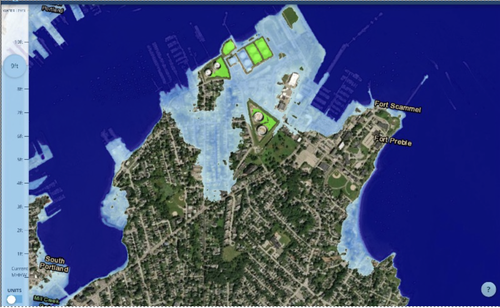
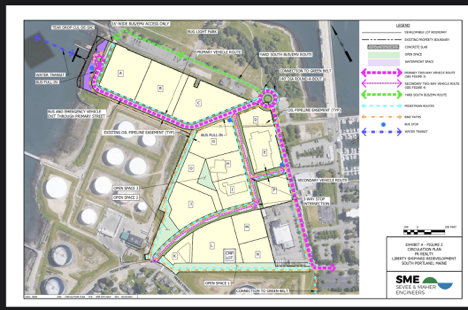

Yard South Proposal
“Yard South” was the name on the mixed waterfront development proposed at 149/159 Front Street and neighboring parcels, beside Bug Light Park. Its owner, L&R Northpoint Holdings LLC (PK Realty Management), filed the zoning map, zoning text and contract-zone amendments on July 31, 2024, aiming to enable up to 1,200 residential units, 216,400 square feet of nonresidential use and 100 hotel rooms. The applicant withdrew the application effective Nov. 4, 2024; the City’s record states no further processing will occur. The record stays public on the City’s Major Projects page, which links the withdrawal letter.
The withdrawal ends the application, but not the land question: PK Realty said afterward it is “pursuing other options” for the property, so a resubmission under different terms remains possible. Separately, the South Portland Housing Development Corporation filed its own application (May 6, 2024, PID 2165) to build soil-cover systems on 2.03 acres at 149A Front Street with EPA Brownfield Cleanup funding and DEP/USEPA oversight; the City notes that action on the soil-cover application is “not an approval or any indication of support” for any Yard South requests.
Protect South Portland’s mission is to promote actions and practices that serve to protect the environment and the health and welfare of South Portland. We felt this included the health and welfare of potential future residents of our city.
The proposed development had many issues that PSP felt needed to be addressed before the city could even consider changing the zoning in that area to allow three or four 18-story high-rises that could house 2,000 or more people.
In addition to the dangerous health impacts of tank fumes on people living near these tanks, sea level rise and climate-driven natural disasters could hit the proposed housing and the low-lying tanks alike. Storm surges could flood the foundations of the tanks, releasing toxins or dislodging the tanks. The areas surrounding the tanks are at risk of catastrophic events which include explosions and/or fires that would require emergency evacuation.
Below are some of the well-researched reasons and disturbing unknowns PSP put before the Planning Board and our representatives on the City Council.


Talking points PSP brought to the Planning Board and City Council
- We don’t know the threats from climate change and water inundation to above-ground petroleum infrastructure and buried petroleum infrastructure.
- We need to know what percentage of the coast of So. Portland has decades-old petroleum infrastructure that will need to be protected.
- Petroleum sludge was buried on the site of tank farms until 1968.
- Before 1980, no law required spills or hazardous-waste treatment to be recorded. Unidentified sources of contamination may leach into soils and our harbor during extreme weather events and sea level rise.
- Residents at the fence line of the Yard South property would be exposed to Hazardous Air Pollutants (HAPs) and Volatile Organic Compounds (VOCs) in two ways: constant direct venting of petroleum tanks and intense 12-24-hour “burst emissions” during tanker offloads, as documented in the Clean Air Advisory Committee’s report.
- Maine’s Ambient Air Guideline (AAG) for benzene, a strong carcinogen, is 0.4 parts per billion. Massachusetts sets its benzene guideline at 0.3 parts per billion. DEP monitoring near Bug Light has exceeded Maine’s AAG for benzene many times.
- According to DEP permits, the tanks in this area contain a wide variety of petroleum products, including gasoline, jet fuel and diesel. The tank farm next to the Shipyard is licensed for an annual throughput of 823,000 gallons of petroleum products, 330,000 gallons of which are gasoline, for a total of 49.9 tons of VOCs per year and 24.9 tons of HAPs per year. DEP estimates that 25% of Portland Pipeline’s 220 tons of VOCs comes from the Bug Light area tanks.
- Portland Pipeline’s operations have slowed, but they could ramp up again.
- People living around the tanks are exposed to cumulative toxic substances which are known to cause cancer, respiratory, immune, reproductive, liver, kidney and neurological damage. Fetuses and young children are especially susceptible.
- Maine ranks among the nine states with the highest per-capita cancer rates and has an elevated childhood cancer rate. Reducing the local exposure should be a top priority.
- Homes and other potential services such as schools and day cares should not be built near tank farms.
- The operators’ state licenses have never required actual emissions testing. The Maine DEP has relied on a formula created by the American Petroleum Institute to let the operators self-report their own estimated emissions.
- After actual testing began, the EPA sued 3 of the 6 oil companies (2012, 2013, 2020): Global, Sprague and Gulf. All were found to have significant violations of their permitted emissions. The oil companies have never been forced to remediate their processes to prevent future excessive emissions; they have just had to pay a fine.
- The EPA has determined that the American Petroleum Institute formula used to measure emissions is widely inaccurate.
- People living near the tank farms have complained of smells that force them to retreat inside and sometimes seal their windows to prevent the fear of known health effects.
- During the Clear Skies Ordinance legal battle, expert testimony confirmed that no level of benzene is safe.
- The tanks nearest the Yard South property contain the most volatile petroleum substance: gasoline. If there is a fire at these tanks or a massive leak or explosion, how could the city possibly evacuate potentially 2,000 people when there is only one road leading away from this property?
- Fighting a fire on the 17th floor of one of these towers would demand fire equipment the department may not have, at great expense.
- The public has not seen a specific evacuation plan for a catastrophic event.
Sea level rise and storm surges
According to a Gulf of Maine Research Institute presentation to the Comprehensive Plan Committee, the rate of sea level rise has been increasing, and the predictions keep getting worse. PSP’s position at the time: if flooding from sea level rise and storm surges damaged properties at Yard South, emergency help and restoration could fall on our taxes, especially where insurance was unaffordable or unavailable. The City needs all available funding to protect already established properties, not to add new development where it is endangered.
This property is located on a brownfield site. How much of the property will be remediated, and what toxins are buried in the soil, remain unknown. There are petroleum pipes under this property as well. What will a higher water level do to these potentially very old pipes?
The tanks are near the shoreline. PSP had not seen any plans for protecting a potential new community and Casco Bay from damage to the tanks, whether leakage, tanks moving off their bases, or collapse.
Reports & articles
- South Portland’s Comprehensive Plan
- One Climate Future Plan
- Sea Level Rise in Maine | Projection Map Viewer — Gulf of Maine Research Institute
- Storms and coastal flooding heighten concerns about stormwater pollution — Penelope Overton
- Early plans for South Portland shipyard redevelopment draw opposition — PPH 1/3/23, Kelley Bouchard
- Maine Voices: Soaring tower development all wrong for South Portland — PPH 1/6/23, Cathy Chapman
- South Portland: a vital petroleum hub — The Maine Monitor 10/9/22, Kate Cough
- The Dirty History of Portland Harbor — Casco Bay Estuary, 1994 reprint
- Water, Water Everywhere — Inside Climate News 5/20/23, Charlie Miller
- Underwater: Could climate chaos sink the US real estate market? — Sierra Magazine Spring 2023, Amanda Abrams
- Bug Light Park protection sparks controversy in South Portland — PPH 5/2/23, Kelley Bouchard
- Yard South's Pre-Application Material (preliminary site plan)
Read the Yard South summary in the campaign archive: Past work.